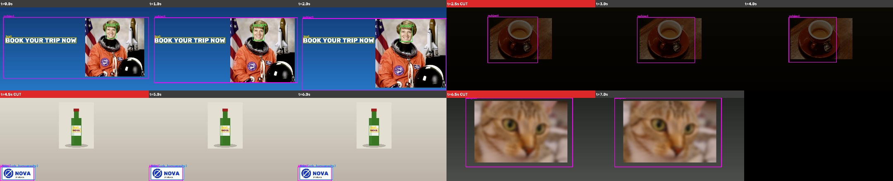
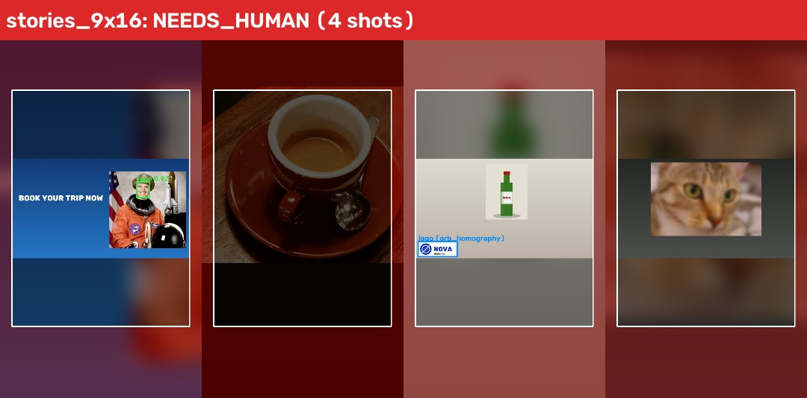
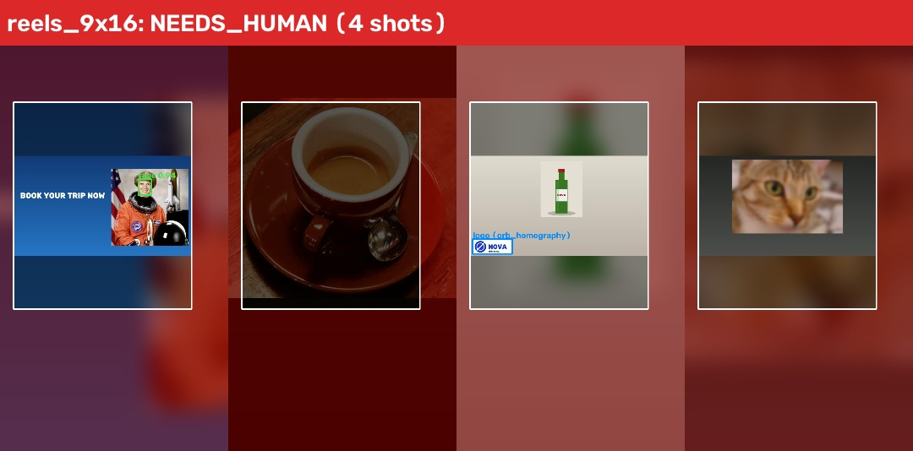
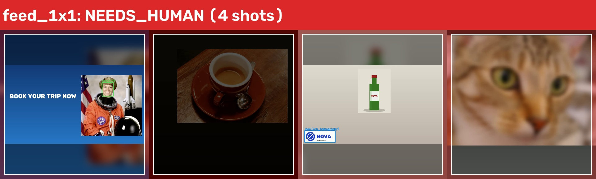
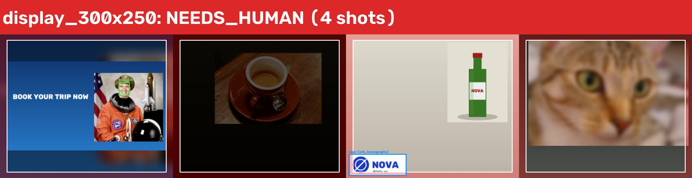

Needs human approval: YES · planner: rules · runtime 23.6s
Source: 1920x1080 · fixes applied: none · source escalation: 25% of frames are dark; brand logo not seen in the first 3 seconds
sharpness 3.386 → 3.386 · brightness 90.9 → 90.9 · text covers 3% · faces 1 · logo found: False


final tool: fit_into_safe_zone, smart_crop, fit_into_safe_zone, fit_into_safe_zone · agent steps: 10
remaining issues: text_too_small
why human: source: 25% of frames are dark; brand logo not seen in the first 3 seconds
placement: text_too_small

final tool: fit_into_safe_zone, smart_crop, fit_into_safe_zone, fit_into_safe_zone · agent steps: 10
remaining issues: text_too_small
why human: source: 25% of frames are dark; brand logo not seen in the first 3 seconds
placement: text_too_small

final tool: fit_into_safe_zone, smart_crop, fit_into_safe_zone, smart_crop · agent steps: 8
remaining issues: none
why human: source: 25% of frames are dark; brand logo not seen in the first 3 seconds
final tool: resize, resize, fit_into_safe_zone, resize · agent steps: 5
remaining issues: none
why human: source: 25% of frames are dark; brand logo not seen in the first 3 seconds

final tool: fit_into_safe_zone, smart_crop, smart_crop, smart_crop · agent steps: 8
remaining issues: logo_in_ui_zone
why human: source: 25% of frames are dark; brand logo not seen in the first 3 seconds
placement: logo_in_ui_zone
| # | stage | observed issues | decision | result |
|---|---|---|---|---|
| 1 | source | dark_frames, first_3s | escalate {} 25% of frames are dark; brand logo not seen in the first 3 seconds | escalated to human |
| 2 | stories_9x16 | aspect_mismatch | smart_crop {"strategy": "all"} aspect differs: crop around faces, logo, text and subject | new issues: face_cut, text_cut |
| 3 | stories_9x16 | face_cut, text_cut | smart_crop {"strategy": "priority"} full crop failed: keep faces and logo first, let text/subject edges go | new issues: text_cut |
| 4 | stories_9x16 | text_cut | fit_into_safe_zone {} crops cannot keep it all in the safe zone: shrink into the safe zone on a blurred backdrop | new issues: none |
| 5 | stories_9x16 | none | accept {} candidate passes every placement check | accepted |
| 6 | stories_9x16 | aspect_mismatch | smart_crop {"strategy": "all"} aspect differs: crop around faces, logo, text and subject | new issues: none |
| 7 | stories_9x16 | none | accept {} candidate passes every placement check | accepted |
| 8 | stories_9x16 | aspect_mismatch | smart_crop {"strategy": "all"} aspect differs: crop around faces, logo, text and subject | new issues: logo_cut, logo_in_ui_zone, text_cut, subject_cut |
| 9 | stories_9x16 | logo_cut, logo_in_ui_zone, text_cut, subject_cut | smart_crop {"strategy": "priority"} full crop failed: keep faces and logo first, let text/subject edges go | new issues: logo_in_ui_zone, text_cut |
| 10 | stories_9x16 | logo_in_ui_zone, text_cut | fit_into_safe_zone {} crops cannot keep it all in the safe zone: shrink into the safe zone on a blurred backdrop | new issues: text_too_small |
| 11 | stories_9x16 | text_too_small | escalate {} no tool left that fixes: text_too_small | escalated to human |
| 12 | stories_9x16 | aspect_mismatch | smart_crop {"strategy": "all"} aspect differs: crop around faces, logo, text and subject | new issues: subject_cut |
| 13 | stories_9x16 | subject_cut | smart_crop {"strategy": "priority"} full crop failed: keep faces and logo first, let text/subject edges go | new issues: subject_cut |
| 14 | stories_9x16 | subject_cut | fit_into_safe_zone {} crops cannot keep it all in the safe zone: shrink into the safe zone on a blurred backdrop | new issues: none |
| 15 | stories_9x16 | none | accept {} candidate passes every placement check | accepted |
| 16 | reels_9x16 | aspect_mismatch | smart_crop {"strategy": "all"} aspect differs: crop around faces, logo, text and subject | new issues: face_cut, text_cut |
| 17 | reels_9x16 | face_cut, text_cut | smart_crop {"strategy": "priority"} full crop failed: keep faces and logo first, let text/subject edges go | new issues: text_cut |
| 18 | reels_9x16 | text_cut | fit_into_safe_zone {} crops cannot keep it all in the safe zone: shrink into the safe zone on a blurred backdrop | new issues: none |
| 19 | reels_9x16 | none | accept {} candidate passes every placement check | accepted |
| 20 | reels_9x16 | aspect_mismatch | smart_crop {"strategy": "all"} aspect differs: crop around faces, logo, text and subject | new issues: none |
| 21 | reels_9x16 | none | accept {} candidate passes every placement check | accepted |
| 22 | reels_9x16 | aspect_mismatch | smart_crop {"strategy": "all"} aspect differs: crop around faces, logo, text and subject | new issues: logo_cut, logo_in_ui_zone, text_cut, subject_cut |
| 23 | reels_9x16 | logo_cut, logo_in_ui_zone, text_cut, subject_cut | smart_crop {"strategy": "priority"} full crop failed: keep faces and logo first, let text/subject edges go | new issues: logo_in_ui_zone, text_cut |
| 24 | reels_9x16 | logo_in_ui_zone, text_cut | fit_into_safe_zone {} crops cannot keep it all in the safe zone: shrink into the safe zone on a blurred backdrop | new issues: text_too_small |
| 25 | reels_9x16 | text_too_small | escalate {} no tool left that fixes: text_too_small | escalated to human |
| 26 | reels_9x16 | aspect_mismatch | smart_crop {"strategy": "all"} aspect differs: crop around faces, logo, text and subject | new issues: subject_cut |
| 27 | reels_9x16 | subject_cut | smart_crop {"strategy": "priority"} full crop failed: keep faces and logo first, let text/subject edges go | new issues: subject_cut |
| 28 | reels_9x16 | subject_cut | fit_into_safe_zone {} crops cannot keep it all in the safe zone: shrink into the safe zone on a blurred backdrop | new issues: none |
| 29 | reels_9x16 | none | accept {} candidate passes every placement check | accepted |
| 30 | feed_1x1 | aspect_mismatch | smart_crop {"strategy": "all"} aspect differs: crop around faces, logo, text and subject | new issues: text_cut |
| 31 | feed_1x1 | text_cut | smart_crop {"strategy": "priority"} full crop failed: keep faces and logo first, let text/subject edges go | new issues: text_cut, text_in_ui_zone |
| 32 | feed_1x1 | text_cut, text_in_ui_zone | fit_into_safe_zone {} crops cannot keep it all in the safe zone: shrink into the safe zone on a blurred backdrop | new issues: none |
| 33 | feed_1x1 | none | accept {} candidate passes every placement check | accepted |
| 34 | feed_1x1 | aspect_mismatch | smart_crop {"strategy": "all"} aspect differs: crop around faces, logo, text and subject | new issues: none |
| 35 | feed_1x1 | none | accept {} candidate passes every placement check | accepted |
| 36 | feed_1x1 | aspect_mismatch | smart_crop {"strategy": "all"} aspect differs: crop around faces, logo, text and subject | new issues: logo_in_ui_zone |
| 37 | feed_1x1 | logo_in_ui_zone | smart_crop {"strategy": "priority"} full crop failed: keep faces and logo first, let text/subject edges go | new issues: logo_in_ui_zone |
| 38 | feed_1x1 | logo_in_ui_zone | fit_into_safe_zone {} crops cannot keep it all in the safe zone: shrink into the safe zone on a blurred backdrop | new issues: none |
| 39 | feed_1x1 | none | accept {} candidate passes every placement check | accepted |
| 40 | feed_1x1 | aspect_mismatch | smart_crop {"strategy": "all"} aspect differs: crop around faces, logo, text and subject | new issues: none |
| 41 | feed_1x1 | none | accept {} candidate passes every placement check | accepted |
| 42 | youtube_16x9 | none | resize {} aspect already matches: plain resize | new issues: none |
| 43 | youtube_16x9 | none | accept {} candidate passes every placement check | accepted |
| 44 | youtube_16x9 | none | resize {} aspect already matches: plain resize | new issues: none |
| 45 | youtube_16x9 | none | accept {} candidate passes every placement check | accepted |
| 46 | youtube_16x9 | none | resize {} aspect already matches: plain resize | new issues: logo_in_ui_zone |
| 47 | youtube_16x9 | logo_in_ui_zone | fit_into_safe_zone {} crops cannot keep it all in the safe zone: shrink into the safe zone on a blurred backdrop | new issues: none |
| 48 | youtube_16x9 | none | accept {} candidate passes every placement check | accepted |
| 49 | youtube_16x9 | none | resize {} aspect already matches: plain resize | new issues: none |
| 50 | youtube_16x9 | none | accept {} candidate passes every placement check | accepted |
| 51 | display_300x250 | aspect_mismatch | smart_crop {"strategy": "all"} aspect differs: crop around faces, logo, text and subject | new issues: text_cut |
| 52 | display_300x250 | text_cut | smart_crop {"strategy": "priority"} full crop failed: keep faces and logo first, let text/subject edges go | new issues: text_cut |
| 53 | display_300x250 | text_cut | fit_into_safe_zone {} crops cannot keep it all in the safe zone: shrink into the safe zone on a blurred backdrop | new issues: none |
| 54 | display_300x250 | none | accept {} candidate passes every placement check | accepted |
| 55 | display_300x250 | aspect_mismatch | smart_crop {"strategy": "all"} aspect differs: crop around faces, logo, text and subject | new issues: none |
| 56 | display_300x250 | none | accept {} candidate passes every placement check | accepted |
| 57 | display_300x250 | aspect_mismatch | smart_crop {"strategy": "all"} aspect differs: crop around faces, logo, text and subject | new issues: logo_in_ui_zone |
| 58 | display_300x250 | logo_in_ui_zone | smart_crop {"strategy": "priority"} full crop failed: keep faces and logo first, let text/subject edges go | new issues: logo_in_ui_zone |
| 59 | display_300x250 | logo_in_ui_zone | fit_into_safe_zone {} crops cannot keep it all in the safe zone: shrink into the safe zone on a blurred backdrop | new issues: logo_not_redetected, text_too_small |
| 60 | display_300x250 | logo_not_redetected, text_too_small | escalate {} no tool left that fixes: logo_not_redetected, text_too_small | escalated to human |
| 61 | display_300x250 | aspect_mismatch | smart_crop {"strategy": "all"} aspect differs: crop around faces, logo, text and subject | new issues: none |
| 62 | display_300x250 | none | accept {} candidate passes every placement check | accepted |